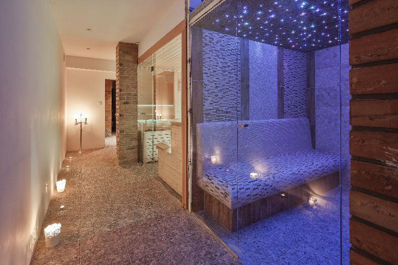

SPA
SaunyJacuzzi
Basen(w budowie)

{kind=link}
OFERTA SPA MEDICAL Medical SPA Hotelu Maria to nie tylko miejsce relaksu ale również centrum odnowy biologicznej i rehabilitacji. Dzięki wysoko wykwalifikowanej kadrze posiadamy w ofercie szeroką gamę masaży leczniczych. Na szczególną uwagę zasługuje terapia manualna. Posiadamy niezbędne zaplecze do prowadzenia rehabilitacji indywidualnej. W rehabilitacji wykorzystujemy metodę Karela Lewita, Ackermanna, Funkcjonalną Osteopatię i Integrację, Kinesiology Taping. Ofertę dopełniają zabiegi wykonywane w gabinecie elektroterapii, magnetoterapii okładów borowinowych. Tak szerokie spectrum pozwala na ustalenie indywidualnego programu leczenia, precyzyjnie dostosowanego do konkretnych dolegliwości. Uzyskanie optymalnego efektu terapeutycznego możliwe jest dzięki wstępnym badaniom przeprowadzanym przez lekarza specjalistę na początku pobytu. Nasza wykwalifikowana kadra udzieli fachowej porady i pomoże w szybkim powrocie do zdrowia, zarówno tym którzy cierpią z powodu rwy kulszowej, czy nieustających bólów głowy. A to tylko niewielki wycinek naszych możliwości. Zapraszamy do naszego Centrum Medical Spa Hotelu Maria nie tylko naszych gości ale każdego, kto poszukuje skutecznych form poprawy kondycji zdrowotnej. Dla ułatwienia doboru właściwych technik a co za tym idzie zaplanowania najskuteczniejszych zabiegów, mile widziane jest posiadanie dokumentacji dotyczącej historii choroby (zdjęcia RTG, CT – tomografia komputerowa, MR – rezonans magnetyczny, itp.) MASAŻE CENNIK ZABIEGÓW SPA MEDICAL Zabiegi terapeutyczne z wykorzystaniem zaplecza SPA: Masaż klasyczny 30 min 60 zł Masaż klasyczny 60 min 100 zł Masaż leczniczy 30 min 60 zł Masaż leczniczy 60 min 100 zł Masaż leczniczy kręgosłupa 45 min 100 zł Rehabilitacyjne zabiegi manualne Terapia manualna według dr. ACERMANA (kręgarstwo) 30 min 60 zł FOI Funkcjonalna Osteopatia Integracyjna 60 min 100 zł Kinesiology taping 20 min 25/40 zł (w zależności od miejsca aplikacji) SPA RELAKS Masaż relaksacyjny 60 min 110 zł Masaż relaksacyjny + aromaterapia 60 min 120 zł Masaż bańką chińską (całe ciało) 45 min 80 zł Masaż bańką chińską wybranych partii ciała 30 min 60 zł Masaż relaksacyjny w połączeniu z masażem wibracji dźwięku mis tybetańskich ok 60 min 120 zł Masaż dźwiękiem mis tybetańskich ok 60 min 100 zł Terapia dźwiękiem mis i gongów tybetańskich ok 90 min 150 zł Masaż gorącymi kamieniami 60 min 120 zł Masaż gorącymi kamieniami 90 min 180 zł Masaż gorącymi kamieniami z olejkami aromaterapeutycznymi 90 min 200 zł Świecowanie uszu 45 min 70 zł Świecowanie uszu + aromaterapia 70 min 100 zł FIZYKOTERAPIA Indywidualna gimnastyka korekcyjna 30 min 50 zł Elektrostymulacja 15 min 10 zł Prądy TENS 15 min 10 zł Prądy interferencyjne 15 min 10 zł Prądy Trabeta 15 min 10 zł Prądy DD 15 min 10 zł Jonoforeza (z lekiem pacjenta) 15 min 10 zł Ultradźwięki 15 min 10 zł Magnetoterapia 20 min 10 zł Lampa Sollux 20 min 10 zł Laser 15 min 10 zł Borowia – jeden plaster 30 min 20 zł